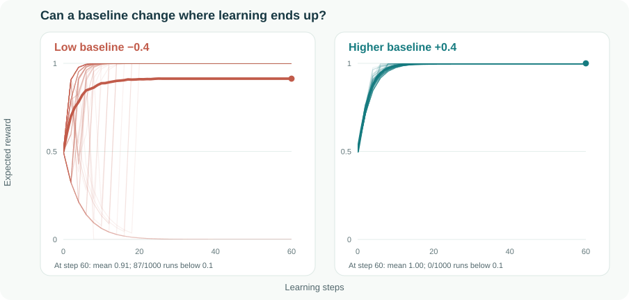

Imagine an agent learning to press one of two buttons. The blue button gives it a treat every time; the red button gives it nothing. The agent does not know this yet. It has to try buttons and gradually adjust its chances of pressing each one.
A policy-gradient learner updates itself using the reward from the button it pressed, compared with a reference point called a baseline. The signal is simply reward minus baseline. Baselines are usually introduced as a way to make these updates less noisy. That story is true, but it misses what happens along one particular learning journey.
Two reference points, two reactions
Blue pays 1; red pays 0. After a red press, a low baseline gives red a positive signal (0 − (−0.4) = +0.4). A higher baseline gives red a negative one (0 − 0.4 = −0.4). What does that mean over a whole learning run, when each next press comes from the policy the agent has learned so far?

With the low baseline, even a disappointing red press gets reinforced. If the agent happens to press red a few times early on, red becomes more likely each time. Blue becomes rarer, so the agent gets fewer chances to discover that blue was better all along. Its own decisions determine what evidence it will see next.
With the higher baseline, a red press moves the agent away from red. It leaves the door open for more blue presses. The difference is less about one update than about the feedback loop: try a button, change the policy, then collect the next experience using that changed policy.
But isn't the average update the same?
Yes. At a fixed policy, subtracting either baseline leaves the expected policy gradient unchanged. Averaged over possible button presses, both point toward blue. But a learner lives through one sequence of presses, not the average of every possible sequence. An unlucky early streak can make the better button so unlikely that the corrective evidence almost never arrives.
In our ICML 2021 paper, we call quick reinforcement of the sampled action committal behaviour. A less committal update keeps alternatives in play for longer. That is why the baseline is tied to exploration and exploitation: it affects how quickly the learner acts as though its early experience has settled the question.
Why variance alone does not settle it
The two-button story is only the beginning. In a three-button example, the rewards are 1, 0.7, and 0. The baseline that minimizes update variance can still allow the learner to settle on the middle button. Another baseline has higher variance but avoids that failure in the paper's setting. The quietest update is not necessarily the one that leads to the best discovery.
This is not a rule to always choose a larger baseline. A learner that never commits has its own problems, and the precise results depend on the algorithm and setting. The useful shift in perspective is to ask what a baseline makes the agent do after each experience, and how that changes the experiences available later.
Our NeurIPS 2022 follow-up develops the story further, including why the value function is a particularly useful reference point under its assumptions. The broad lesson remains simple: in learning from your own actions, a baseline can change more than the noise. It can change when you decide you have seen enough.